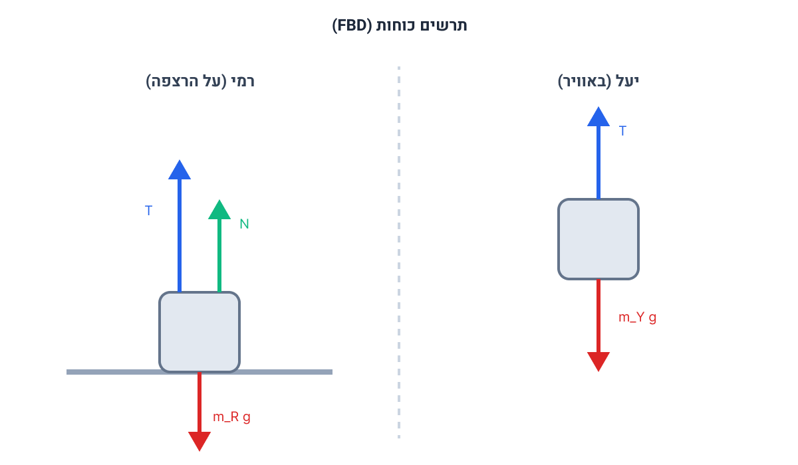

[תמונת השאלה המקורית]לא נמצאה תמונה בשם question-image.png באותה תיקייה.
רקע לתרגיל - הכרת המערכת
לפנינו מערכת גלגלת המקשרת בין שני גופים (רמי ויעל) באמצעות חבל. אנו מניחים (כפי שמקובל כשלא מצוין אחרת) שמסת החבל והגלגלת ניתנת להזנחה, ושאין חיכוך בציר הגלגלת. לכן, מתיחות החבל (T) שווה לכל אורכו. במצב ההתחלתי, המערכת נמצאת במנוחה מלאה.
סעיף א': תרשים כוחות
מה נתון:
מסת רמי: \( m_R = 70 \text{ kg} \).
מסת יעל: \( m_Y = 60 \text{ kg} \).
תאוצת הכובד: \( g = 10 \text{ m/s}^2 \). (יחידות תקינות MKS).
המערכת במנוחה (מהירות אפס ותאוצה אפס). רמי עומד על הרצפה. יעל תלויה באוויר.
מה מחפשים:
לשרטט תרשים כוחות (Free Body Diagram) נפרד לרמי ונפרד ליעל, ולציין את שמם של הכוחות הפועלים עליהם.
נוסחאות בשימוש:
הסעיף הוא רעיוני בעיקרו ומסתמך על זיהוי אינטראקציות, אך נזכור את כוח הכובד מתוך דף הנוסחאות:
\( F = mg \)
הצבה ופתרון:
נסתכל על האינטראקציות של כל גוף. יעל: נמצאת באוויר ולכן פועלים עליה רק שני כוחות - כוח המשיכה כלפי מטה (משקלה), וכוח המתיחות של החבל שמושך אותה כלפי מעלה. רמי: עומד על הרצפה ומחזיק בחבל. פועלים עליו שלושה כוחות - כוח המשיכה כלפי מטה, כוח מתיחות החבל המושך אותו כלפי מעלה, וכוח נורמלי מהרצפה שדוחף אותו גם הוא כלפי מעלה.

[תרשים כוחות]לא נמצאה תמונה בשם image-1.png באותה תיקייה.
מקרא כוחות:
\( T \) - כוח מתיחות החבל (מופעל על ידי החבל, פועל כלפי מעלה).
\( m_Y g \) , \( m_R g \) - כוחות הכובד/משקל (מופעלים על ידי כדור הארץ, פועלים כלפי מטה).
\( N \) - כוח נורמלי (מופעל על ידי הרצפה על רמי בלבד, פועל בניצב למשטח כלפי מעלה).
💡 הערת מורה: שימו לב ששני הגופים חולקים את אותו כוח מתיחות \( T \). מכיוון שגלגלת היא אידיאלית (חסרת מסה וללא חיכוך) והחבל חסר מסה, המתיחות חייבת להיות אחידה לאורך כל החבל. אינטואיציה חשובה: למה ציירנו את \( N \) ו- \( T \) יחד אצל רמי? כי רמי נתמך חלקית על ידי הרצפה וחלקית על ידי החבל.
סעיף ב': חישוב הכוח הנורמלי במנוחה
מה נתון:
המערכת במנוחה. לכן התאוצה של כל גוף היא אפס: \( a_Y = 0 \) ו- \( a_R = 0 \).
מה מחפשים:
את גודל הכוח שהרצפה מפעילה על רמי. כוח זה הוא הכוח הנורמלי, נסמן אותו באות \( N \).
נוסחאות בשימוש:
מכיוון שהמערכת במנוחה (מצב התמדה), נשתמש בחוק הראשון של ניוטון הקובע שסכום הכוחות הפועלים על גוף במנוחה שווה לאפס:
\( \Sigma\vec{F} = 0 \)
הצבה ופתרון:
כאן נלמד עיקרון חשוב בבחירת צירים. במערכת של שני גופים המחוברים בחוט דרך גלגלת, כיווני התנועה שלהם תלויים זה בזה (אם אחד עולה, השני יורד). לכן, נכין מראש "ציר תנועה" (ציר מתקפל) בהתאם לכיוון התנועה המשותף האפשרי להמשך. נבחר כיוון חיובי עבור יעל כלפי מעלה, וכתוצאה מכך הכיוון החיובי עבור רמי יהיה כלפי מטה. נרשום את משוואות הכוחות לכל גוף בנפרד לפי החוק הראשון.
נתחיל מיעל (כיוון חיובי מעלה):
\[ \Sigma F_y (\text{Yael}) = 0 \]
\[ T - m_Y g = 0 \]
\[ T = m_Y g = 60 \text{ kg} \cdot 10 \text{ m/s}^2 = 600 \text{ N} \]
כעת, ניגש לרמי (כיוון חיובי מטה). אנו יודעים כעת את מתיחות החבל \( T \), ומחפשים את \( N \):
\[ \Sigma F_y (\text{Rami}) = 0 \]
\[ m_R g - T - N = 0 \]
\[ N = m_R g - T \]
נציב את הנתונים המספריים:
\[ N = (70 \cdot 10) - 600 \]
\[ N = 700 - 600 = 100 \text{ N} \]
גודל הכוח שהרצפה מפעילה על רמי הוא: \( N = 100 \text{ N} \).
💡 הערת מורה: שימו לב לבחירת הצירים! חדי העין ודאי יבחינו שאמנם כרגע אין תנועה, אך אם היינו בוחרים ציר כלפי מעלה לשניהם, הייתה נוצרת בעיה של חוסר עקביות בסעיפים הבאים. בתנועה מקושרת, כשאחד נע למעלה השני נע למטה. קביעת "ציר תנועה" (למעלה אצל יעל ולמטה אצל רמי) מבטיחה שאם תיווצר תנועה, לשניהם תהיה בדיוק אותה תאוצה \( a \) עם אותו סימן. הרגל פדגוגי זה ימנע מכם בלבול רב וטעויות סימן מיותרות בהמשך!
סעיף ג': יעל מטפסת - ניתוח איכותי
מה נתון:
יעל מטפסת במעלה החבל בתאוצה קבועה של \( a_Y = 0.25 \text{ m/s}^2 \) כלפי מעלה (ביחס לרצפה). רמי נשאר במנוחה על הרצפה (\( a_R = 0 \)).
מה מחפשים:
האם הכוח הנורמלי (שהרצפה מפעילה על רמי) גדל, קטן, או נשאר שווה ביחס למצב הקודם? יש לנמק.
נוסחאות בשימוש:
\( \Sigma\vec{F} = m\vec{a} \)
הצבה ופתרון:
נסמן את הכוחות החדשים עם גרש ( ' ) כדי להבדילם מסעיף ב'.
נבחן מה קורה למתיחות החבל כאשר יעל מאיצה כלפי מעלה. נרשום את חוק השני של ניוטון עבור יעל (כיוון חיובי מעלה):
מכיוון שהתאוצה \( a_Y \) כעת גדולה מאפס (וחיובית, כי היא למעלה), אנו מקבלים ש- \( T' \) חייב להיות גדול מ- \( m_Y g \). כלומר, המתיחות בחבל גדלה.
כעת נסתכל על רמי. הוא עדיין במנוחה, ולכן סכום הכוחות עליו נשאר אפס. נזכור שהציר החיובי שלו מוגדר כעת כלפי מטה:
\[ m_R g - T' - N' = 0 \]
\[ N' = m_R g - T' \]
משקלו של רמי (\( m_R g \)) נשאר קבוע. מכיוון שמתיחות החבל \( T' \) גדלה, הסכום שאנו מחסירים מהמשקל גדול יותר, ולכן הכוח הנורמלי \( N' \) חייב להיות קטן יותר.
הכוח שהרצפה מפעילה על רמי (הנורמל) קטן מהכוח שחושב בסעיף ב'.
נימוק: יעל מאיצה כלפי מעלה ולכן מתיחות החבל גדלה. מכיוון שמשקלו של רמי קבוע, החבל מושך את רמי חזק יותר כלפי מעלה, ורמי "נשען" פחות על הרצפה.
💡 הערת מורה: זהו סעיף הבנה קלאסי. אנחנו לא חייבים להציב מספרים כדי להוכיח! כתיבת המשוואות והסקת המסקנה המתמטית (\( T \) גדל ולכן בחיסור נקבל תוצאה קטנה יותר עבור \( N \)) מהווה הוכחה (נימוק) מלאה ותקינה בבגרות.
סעיף ד': חישוב המתיחות כשיעל מאיצה
מה נתון:
תאוצתה של יעל כלפי מעלה: \( a_Y = 0.25 \text{ m/s}^2 \). מסתה \( m_Y = 60 \text{ kg} \).
מה מחפשים:
את גודל מתיחות החבל \( T' \) בזמן תנועתה של יעל בתאוצה זו.
נוסחאות בשימוש:
\( \Sigma\vec{F} = m\vec{a} \)
הצבה ופתרון:
בסעיף זה מתמקדים ביעל בלבד, שכן אנו יודעים את התאוצה שלה ומשוואת הכוחות שלה מספיקה כדי למצוא את המתיחות בחבל. אין צורך לערב את רמי בחישוב זה.
נרשום את החוק השני של ניוטון עבור יעל (כיוון חיובי מעלה):
💡 הערת מורה: דרך מצוינת לבדוק את עצמנו: בסעיף ב' במנוחה קיבלנו \( T = 600 \text{ N} \). בסעיף ג' אמרנו מילולית שכאשר היא מאיצה כלפי מעלה המתיחות אמורה לגדול. וכאן, בחישוב מתמטי מדויק, אכן קיבלנו \( 615 \text{ N} > 600 \text{ N} \). הפיזיקה עקבית!
סעיף ה': תאוצה מינימלית להתרוממות (סף ניתוק)
מה נתון בשאלה:
אנו עוסקים במצב שבו רמי בדיוק "מתרומם מהרצפה".
מה מחפשים:
את התאוצה המינימלית של יעל (\( a_{min} \)) הדרושה כדי לגרום לזה לקרות.
🤔 איך מתרגמים את השאלה לפיזיקה? (תיווך להבנה)
כאשר השאלה מבקשת את התאוצה המינימלית כדי שרמי יתרומם, עלינו למצוא את מצב הגבול.
ראינו בסעיף ג' שככל שיעל מאיצה יותר כלפי מעלה, מתיחות החבל גדלה. החבל מושך את רמי חזק יותר, ולכן רמי "נשען" פחות על הרצפה וכוח התגובה של הרצפה (הכוח הנורמלי, \(N\)) הולך וקטן.
מתי בדיוק מתחילים להתרומם? הרגע המדויק שבו גוף מאבד מגע עם משטח ומתחיל לרחף הוא הרגע שבו המשענת נעלמת לחלוטין – כלומר, הכוח הנורמלי מתאפס. למצב גבול זה אנו קוראים "סף ניתוק" (\( N = 0 \)).
לכן, אסטרטגיית הפתרון שלנו היא לדרוש ש-\( N = 0 \) (רמי על סף התרוממות, אך התאוצה שלו עדיין אפס), ומתוך תנאי זה לחלץ איזו תאוצה יעל הייתה צריכה להפיק כדי להגיע למתיחות שאיפסה את הנורמל.
נוסחאות בשימוש:
\( \Sigma\vec{F} = m\vec{a} \)
הצבה ופתרון:
כפי שהסברנו, ננתח קודם כל את המצב של רמי על סף הניתוק. הוא עדיין לא זז (\( a_R = 0 \)), אך הנורמל בדיוק התאפס (\( N = 0 \)). נרשום את סכום הכוחות על רמי (כיוון חיובי מטה):
\[ \Sigma F_y (\text{Rami}) = m_R a_R \]
\[ m_R g - T_{lift} - N = m_R \cdot 0 \]
נציב את הנתונים: המסה של רמי היא \(70\text{ kg}\), \(g=10\), והכי חשוב - כיוון שאנו על סף ניתוק נציב \(N=0\):
התאוצה המינימלית שבה יעל צריכה לטפס כדי שרמי יתרומם מהרצפה היא: \( a_{min} = 1.67 \text{ m/s}^2 \) (או בדיוק \( 1\frac{2}{3} \text{ m/s}^2 \)).
💡 הערת מורה: המילה "סף" בפיזיקה היא מילת קוד למצב גבול. ההקשר בשאלה קובע איזה כוח הגיע לגבול שלו!
"על סף ניתוק" / "מתרומם ממשטח" פירושו משענת שנעלמת: \( N = 0 \) (כמו בתרגיל שלנו).
"על סף החלקה" פירושו הגעה לחיכוך סטטי מקסימלי: \( f_s = \mu_s N \).
"סף קריעה" של חוט פירושו הגעה למתיחות מקסימלית: \( T = T_{max} \).
זכרו לקרוא היטב מיהו הכוח שמתקרב לקצה גבול היכולת שלו. בנוסף, הקפידו לעבוד בשלבים: קודם למצוא את הדרישה של הגוף המוגבל (ה-T שרמי דורש), ואז לבדוק את התנאים של הגוף השני (יעל).
נוסח השאלה המקורית
[תמונת השאלה המקורית]לא נמצאה תמונה בשם question-image.png.